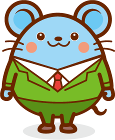
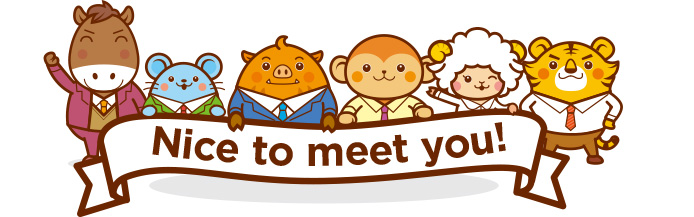

Dev
“Họp xong mà em vẫn không biết mình phải làm gì.”
- Không hiểu tiếng Nhật nên phải chờ comtor thuật lại.
- Yêu cầu đổi ngay trong họp, nhưng công việc trên hệ thống vẫn như cũ, nên làm sai.
Nghe họp, dịch ngay, viết sẵn biên bản (結び · gắn kết)
|
Video demo đang được cập nhật
Mỗi vai trò trong dự án đều có những khó khăn khác nhau.
“Họp xong mà em vẫn không biết mình phải làm gì.”
“Vừa nghe, vừa dịch, vừa ghi thì không kịp.”
“Ai nhận việc gì, hạn khi nào? Tôi không có gì để chứng minh.”
Ba người, một nguyên nhân: điều đã nói trong họp không được ghi lại đầy đủ và chính xác.
Musubi là ứng dụng cài trên máy tính. Nó nghe cuộc họp qua mic và loa, hiện chữ và bản dịch ngay khi mọi người đang nói, rồi viết sẵn biên bản khi họp xong. Dùng với Teams, Zoom, Meet hay họp trực tiếp đều được.
Biên bản tự động: Decision, Action item (người phụ trách, deadline), Issue.
Evidence: mỗi mục dẫn về đúng câu nói gốc trong bản ghi.
Phát hiện điểm mơ hồ (ambiguity): chỗ hai bên có thể hiểu khác nhau được đánh dấu sẵn.
Nhóm làm việc với khách hàng Nhật mỗi ngày, nên Musubi xuất phát từ chính những khó khăn nhóm gặp trong họp.
Công nghệ Speech to text (STT) và dịch giờ đã đủ tốt để hỗ trợ xây dựng ứng dụng như Musubi. Trong 17 cuộc họp thử, Musubi đã ghi lại và dịch cả 449 lượt nói tiếng Nhật và tiếng Việt.
Từ lúc chuẩn bị đến lúc gửi biên bản cho cả nhóm.
Teams Copilot, Otter, Notta… tốt cho họp nói chung. Musubi làm riêng cho những cuộc họp nói nhiều thứ tiếng.
Chữ và bản dịch hiện ngay khi người ta đang nói. Ai cũng theo kịp, không phải chờ cuối buổi nghe giải thích lại.
Việc nào đã có người nhận được ghi rõ, kèm câu họ đã nói. Không còn cảnh “tưởng anh ấy nhận rồi”.
Lấy âm thanh trực tiếp từ hệ thống (loa và micro của máy), nên dùng được với Teams, Zoom, Meet hay họp trực tiếp.
Tên module và thuật ngữ của dự án luôn được dịch đúng, buổi nào cũng vậy.
Âm thanh và văn bản đi qua server của nhóm tới các dịch vụ AI. API key của các dịch vụ đó chỉ nằm trên server, máy người dùng không giữ.
Luôn xin đồng ý trước khi ghi âm. AI không tự gửi gì đi, và biên bản chỉ chốt khi bạn bấm xác nhận.
Cùng một cuộc họp, hôm nay và khi có Musubi.
3–5 buổi mỗi tuần, mỗi dự án
→Vẫn vậy, nhưng không ai phải vừa nghe vừa ghi
Phải dịch lại, hỏi lại nhiều lần, dễ nghe sót và dịch sai thuật ngữ
→Chữ và bản dịch hiện ngay trên màn hình; gặp từ lạ thì bấm vào xem giải thích
30–60 phút sau mỗi buổi
→Khoảng 5 phút đọc lại biên bản Musubi đã viết sẵn
Có mặt trong họp nhưng không hiểu hết, phải hỏi lại comtor
→Tự nghe và hiểu trực tiếp nhờ phụ đề dịch, chỗ nào chưa rõ thì hỏi thẳng Musubi
Đây là mục tiêu nhóm đặt ra cho mỗi biên bản, và nhóm sẽ đo lại khi dùng thử.
Vẫn những tính năng đó, dùng được ở nhiều nơi khác.
Phỏng vấn ứng viên, hoặc ngồi với khách để lấy yêu cầu.
Hội thảo, seminar, họp toàn công ty có người nghe đến từ nhiều quốc gia.
Mỗi giờ họp tốn khoảng một ly cà phê tiền AI.

| Khoản | Cách tính | Chỉ ghi chữ | Ghi chữ và dịch |
|---|---|---|---|
| Ghi chữ và dịch | Soniox stt-rt-v5: $0,12 mỗi giờ khi chỉ ghi chữ (đã gồm nhận diện người nói). Khi có dịch: $0,18 mỗi giờ | $0,12 | $0,18 |
| Viết biên bản sau họp | GPT-6 Sol. AI đọc bản ghi cả buổi 4 lần (trích việc, làm rõ, tóm tắt, tìm từ mới) ước tính từ prompt thật | $0,30–$0,37 | $0,30–$0,37 |
| Hỗ trợ trong họp | GPT-6 Luna. Giải thích từ lạ, trả lời câu hỏi về cuộc họp: khoảng 20 lần bấm mỗi giờ giả định | $0,01 | $0,01 |
| Tổng mỗi giờ họp | ≈ $0,43–$0,50 ≈ 11.000–13.000 ₫ | ≈ $0,49–$0,56 ≈ 13.000–15.000 ₫ |
Nhân sự tính theo công số (MD, ngày công), không tính lương trực tiếp.
3 thành viên đã làm xong tài liệu thiết kế, máy chủ và ứng dụng trong 4 tuần hackathon. Phần này không tính vào chi phí dùng thử.
Chỉ để cập nhật sản phẩm: mỗi tuần 1 người làm 1 ngày. Sản phẩm đã xây xong nên không cần đội riêng. Dùng thử 3 tháng ≈ 12 MD.
Một server nhỏ chạy backend của nhóm. Chi phí cố định.
Kéo thử các con số theo thực tế của anh chị.
Tính 22 ngày làm việc mỗi tháng, mỗi biên bản mất 5 phút xem lại. Vận hành gồm 4 ngày công mỗi tháng (quy theo giá một giờ ở trên) và server $24; chi phí dùng thử bằng 3 tháng vận hành. Chưa tính những thứ khó quy ra tiền: bớt làm lại vì hiểu sai, giữ được niềm tin của khách, comtor đỡ vất vả.
Xong cuộc thi, nhóm đưa Musubi vào dự án thật trước, rồi kết nối thêm với các công cụ công ty đang dùng.
Nhóm dùng dịch vụ AI bên ngoài để có chất lượng tốt nhất ngay, và kết nối Musubi với các công cụ công ty đang dùng.
Hỗ trợ chia nhỏ (break down) việc cần làm và tạo task trên Backlog, GitLab và các nền tảng quản lý công việc khác.
Phần mềm khác của công ty kết nối vào Musubi qua API.
Bán account, bán license hoặc bán app.
Hệ thống theo dõi lượng token sử dụng, doanh thu và chi phí của app.
Các tích hợp này là kế hoạch, chưa có trong app hiện tại.
Nếu anh chị thấy Musubi có ích, hãy liên hệ để cùng thử trên dự án thật. Nhóm rất mong được lắng nghe.

Để Musubi thử trên một cuộc họp thật của anh chị.
Để nhóm so sánh thời gian và độ chính xác bằng số liệu thật.
Điều gì trong cuộc họp làm anh chị mất thời gian nhất?
Thành viên
Thành viên
Thành viên
Người hướng dẫn: Phạm Lê Phong · Đặng Tân Phú — Nhắn Teams cho Nghị, Đạt hoặc Nhã
Chi tiết cho người muốn đi sâu. Nội dung mô tả những gì đã có trong code (apps/server, apps/desktop). Phần nào là kế hoạch đều ghi rõ.
Nguyên tắc: AI chỉ trả về JSON đề xuất. Backend kiểm tra, con người xác nhận cuối cùng.
“やります” có thể là “tôi sẽ làm” hoặc chỉ mô tả. LLM đọc ngữ cảnh: ai nói, nói với ai, có deliverable không.
Gán mã lý do: DATE_BOUNDARY, REFERENT, SCOPE_EXTENT. Rule-based không làm được việc này.
Phân biệt từ chung (giải thích được) và tên riêng dự án (không bịa nghĩa). “Red Mine” là Redmine.
| Task LLM | Mục đích | Ngưỡng |
|---|---|---|
term_explain | Giải thích từ lạ (GENERAL / PROJECT_SPECIFIC / UNCLEAR) | < 2,5 s |
followup_suggest | Gợi ý 1–3 câu hỏi tiếp theo, chỉ người bấm thấy | < 2,5 s |
| Task LLM | Mục đích | Ưu tiên |
|---|---|---|
minutes_extract | Trích TODO / Decision / Issue | Chính xác |
minutes_clarify | Chỗ cần làm rõ | Chính xác |
minutes_summary | Tóm tắt thảo luận | Chính xác |
glossary_detect | Phát hiện từ mới cho từ điển | Chính xác |
Màu tím là bước dùng LLM. Biên bản do AI tạo luôn ở trạng thái bản nháp (AI_DRAFT), người xem lại phải xác nhận.
| Tác vụ | Lúc nào chạy | Làm gì | Khi LLM lỗi |
|---|---|---|---|
term_explain | Trong họp, người dùng chọn một từ | Giải thích từ, phân loại GENERAL / PROJECT_SPECIFIC / UNCLEAR. Nếu từ đã có trong từ điển dự án, trả ngay, không gọi LLM | Heuristic cục bộ, ghi log lỗi |
followup_suggest | Trong họp, người dùng bấm | Đọc 8 turn gần nhất, gợi ý 1–3 câu hỏi kèm mục đích (CLARIFY, DEEPEN, CONFIRM) | Luật từ khóa tạo câu hỏi mẫu |
minutes_extract | Sau họp, bước 1 | Trích TODO, DECISION, ISSUE. Gán certainty FIRM / TENTATIVE / MISSING và ambiguity cho owner và due | Dừng sinh biên bản, không ghi bản nháp nào |
minutes_clarify | Sau họp, bước 2 | Tìm chỗ cần làm rõ: DATE_BOUNDARY, OWNER_AMBIGUITY, SCOPE_UNCLEAR, CULTURAL_NUANCE | Như trên |
minutes_summary | Sau họp, bước 3 | Tóm tắt thảo luận, gắn nhãn "AI tóm tắt" | Như trên |
glossary_detect | Sau họp, khi duyệt từ mới | Gợi ý tối đa 15 thuật ngữ mới cho từ điển dự án | Heuristic cục bộ (regex), có cảnh báo |
Tất cả tác vụ đi qua gateway.ts. Mỗi tác vụ có protocol, model, timeout và max_tokens riêng trong config.ts. Temperature luôn bằng 0.
Hiện tại nhóm dùng GPT-6 Sol và GPT-6 Luna qua protocol tương thích OpenAI. Timeout là 20 s cho nhóm LIVE và 120 s cho nhóm POST.
Bảng llm_call lưu task, model, phiên bản prompt, danh sách turn đầu vào, token vào/ra, độ trễ, raw_output và kết quả đã kiểm tra. Nhờ đó có thể truy lại vì sao biên bản ra như vậy.
AI không được tự ghi dữ liệu.
Đầu ra được parse và kiểm tra bằng Zod. Sai cấu trúc thì sinh biên bản thất bại, không lưu gì.
Mọi turn_id trích dẫn phải thuộc cuộc họp. member_id phải thuộc dự án. Không có evidence thì FIRM bị hạ xuống TENTATIVE.
Bản ghi validation liệt kê các evidence bị loại, các field bị hạ mức, và các ngày không hợp lệ. Người xem lại thấy được phần AI đã bị hệ thống chỉnh.
| Dịch vụ | Vai trò | Cách gọi | Trạng thái trong code |
|---|---|---|---|
LLM gateway (api.artbloom.tech) | Sáu tác vụ LLM (GPT-6 Sol, GPT-6 Luna) | SDK openai, đặt LLM_OPENAI_BASE_URL; có adapter @anthropic-ai/sdk dự phòng | Đang dùng Chưa rõ IT đã duyệt gửi transcript qua gateway (LLM-SEC-01) |
| Soniox | STT realtime kèm dịch, tách người nói, nhận diện ngôn ngữ | WebSocket, model stt-rt-v5 | Đang dùng Theo cấu hình mới nhất của nhóm |
| AssemblyAI Universal Streaming | STT realtime, phát hiện kết thúc turn | WebSocket, model universal-3-6-pro | Bản trước Đã thay bằng Soniox |
| Deepgram nova-2 | STT thay thế, tiếng Nhật | WebSocket, có diarization | Tùy chọn Chỉ khi client chọn provider |
| DeepL | Dịch đa ngôn ngữ (đã thử Nhật ⇄ Việt), có context để giữ ngữ cảnh | SDK deepl-node | Bản trước Dịch nay nằm trong Soniox |
| Thu âm thanh hệ thống (mic + loopback) | Thu tiếng mọi nền tảng họp hoặc họp trực tiếp | Desktop Electron, gửi audio về server | Đang dùng Không dùng bot vào phòng họp |
Nếu mạng hoặc thiết bị thu âm lỗi khi demo thì phát file ghi âm mẫu cùng kịch bản. Phần xử lý phía sau (hiện chữ, dịch, viết biên bản) vẫn chạy bình thường.